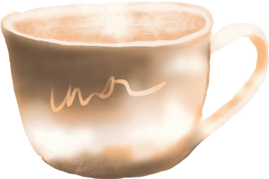

At the intersection of Maoming South Road and Changle Road in Shanghai stands a building in the Italian Renaissance style, quietly holding its place for nearly a century — the Lyceum Theatre, hailed as the “cradle of Shanghai drama.” This cultural landmark, built in 1931, traces its origins back to 1867, when British expatriates constructed the first Lyceum Theatre. After three relocations and reconstructions, it finally took root at its current site as Shanghai’s earliest Western-style theatre.
The building itself is a work of art. Its pale-yellow façade is framed by a Corinthian-columned portico, while the interior preserves the lavish glamour of the 1930s: plush red velvet seats in the second-floor boxes, gilded ornamental railings, and a dome adorned with exquisite frescoes. Most remarkable of all, the theatre still retains its original stage machinery — 25 electrically powered fly bars that can be positioned at will, once considered the most advanced stage equipment in Asia. The original design, as legend has it, was casually sketched by a British architect over afternoon tea, yet it resulted in an enduring architectural classic.
The Lyceum has borne witness to the birth and growth of modern Chinese theatre. In 1907, the Chunyang Society premiered Uncle Tom’s Cabin here, China’s very first spoken drama. In 1934, Cao Yu’s Thunderstorm debuted to great acclaim. In 1945, Peking Opera master Mei Lanfang returned to the stage after an eight-year hiatus during the war, premiering the Kunqu opera The Tiger Slayer. After the founding of the People’s Republic, the theatre was renamed the Shanghai Art Theatre and became home to the Shanghai People’s Art Theatre, staging countless classics. In 1960, Mao Zedong, Liu Shaoqi, and Zhou Enlai attended a performance of the dance drama The Small Sword Society here. In 1983, the Lyceum launched special performances for foreign audiences, introducing traditional Chinese culture to the world. Following a full restoration in 2003, the theatre reopened, retaining 250 “tea seats” — complete with small tables — among its 466 seats, preserving the old Shanghai tradition of sipping tea while enjoying a play.
Today, at 91 years old, the Lyceum remains at the forefront of the arts. From traditional drama to modern musicals, from classical concerts to experimental theatre, it continues to be a melting pot of artistic expression. When night falls and the theatre’s neon lights flicker on, the glow seems to bridge time, merging with the dazzling nightlife of 1930s Shanghai — a city whose art never takes its final bow.
Step out of the Lyceum Theatre, turn onto Changle Road, and just a few paces away you’ll find Onirii Coffee.From Nanchang Road to Jinxian Road to its current spot on Changle Road, Onirii has moved three times. Its weathered blue storefront and discreet, small-lettered sign make it an understated but distinctive presence.
The shop even draws the likes of James Freeman — clarinet enthusiast and founder of Blue Bottle Coffee — proof of the kinship that exists among those deeply devoted to the craft of coffee.
The shop even draws the likes of James Freeman — clarinet enthusiast and founder of Blue Bottle Coffee — proof of the kinship that exists among those deeply devoted to the craft of coffee.
Inspired by Greek gods, Onirii’s creations unfold in layers of flavor, like slipping into a dream both heady and vivid. Within this small haven, coffee is no longer just a drink — it’s a bridge between people, and between a person and themselves. In the soft curl of coffee’s aroma, what we find is more than taste: we discover memory, aesthetics, and emotional resonance.
P.S. By day it’s coffee, by night it’s wine — two pleasures, one space.
the Lyceum Theatre
